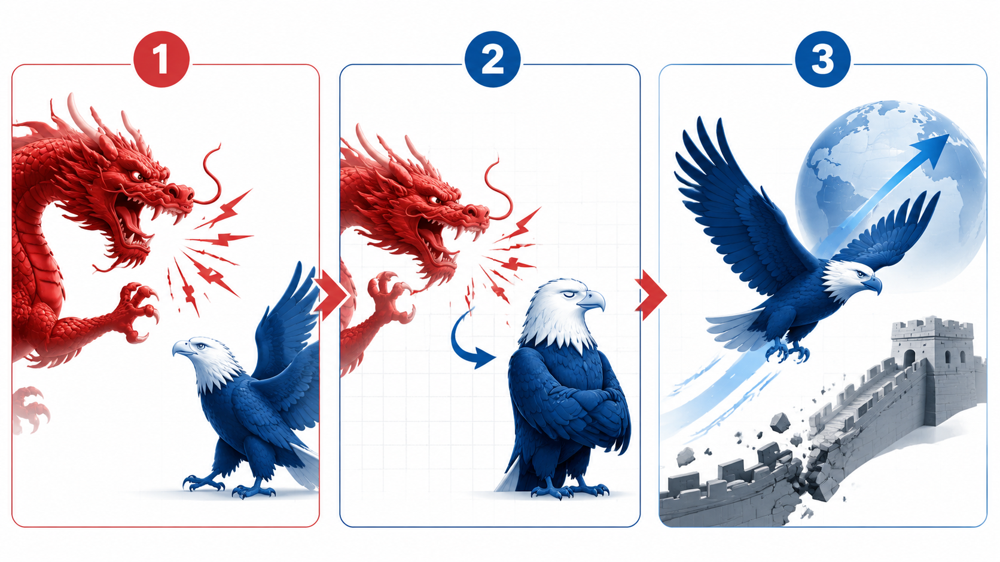
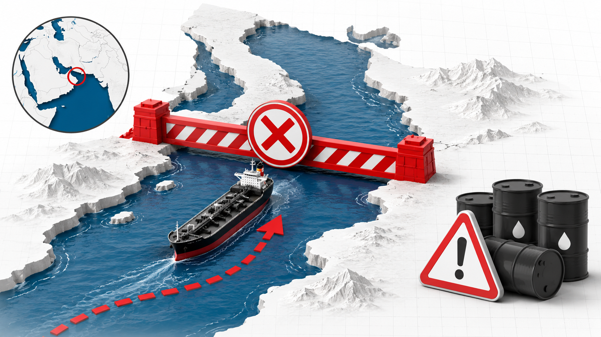
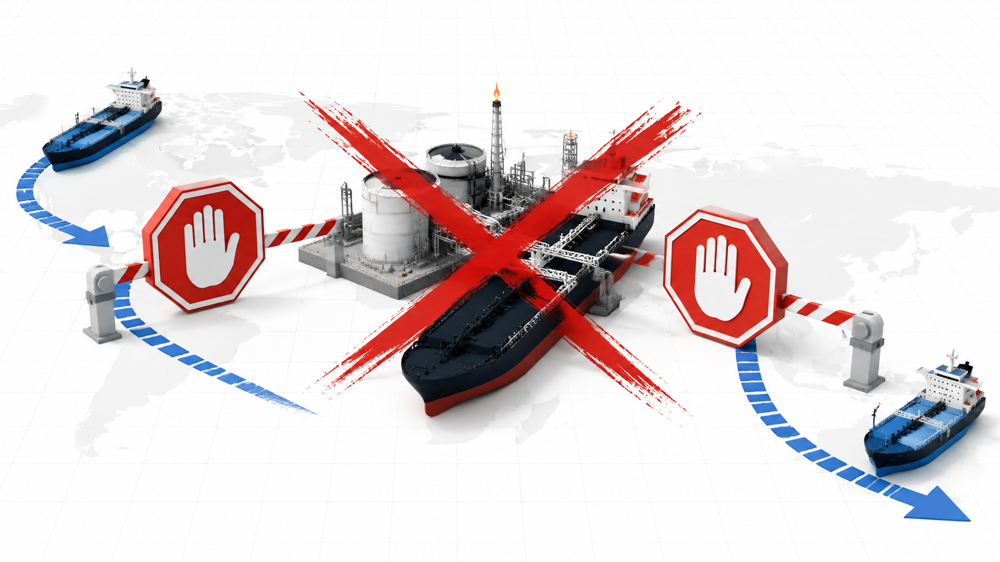
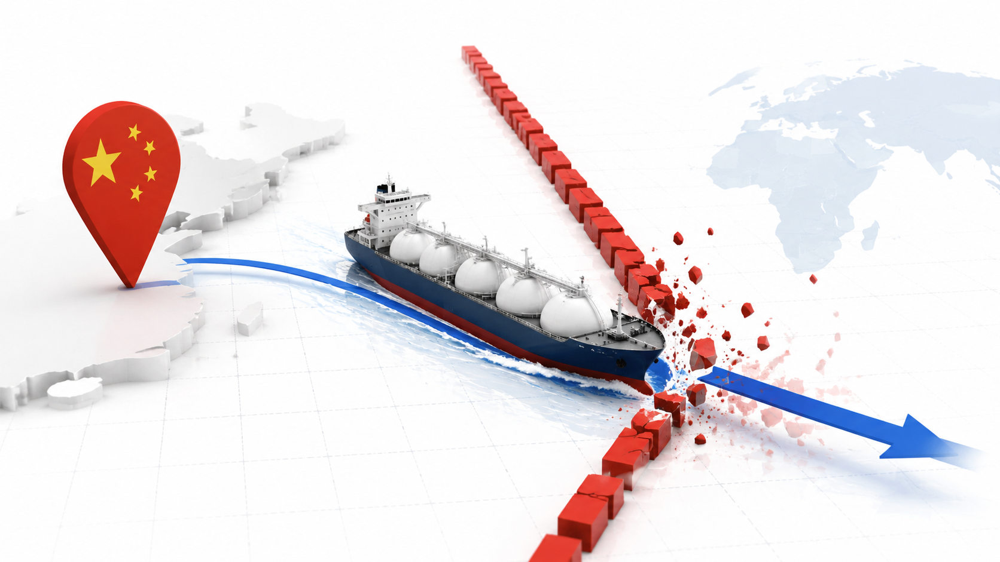
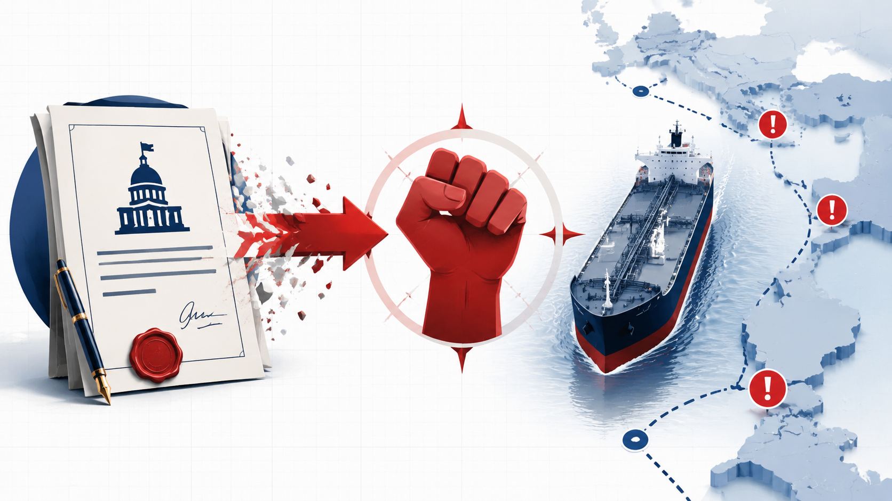
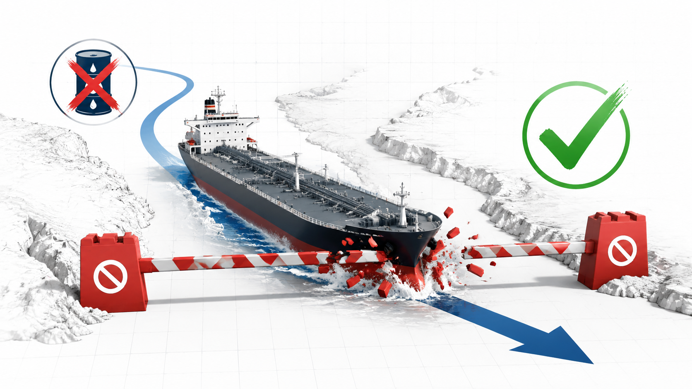
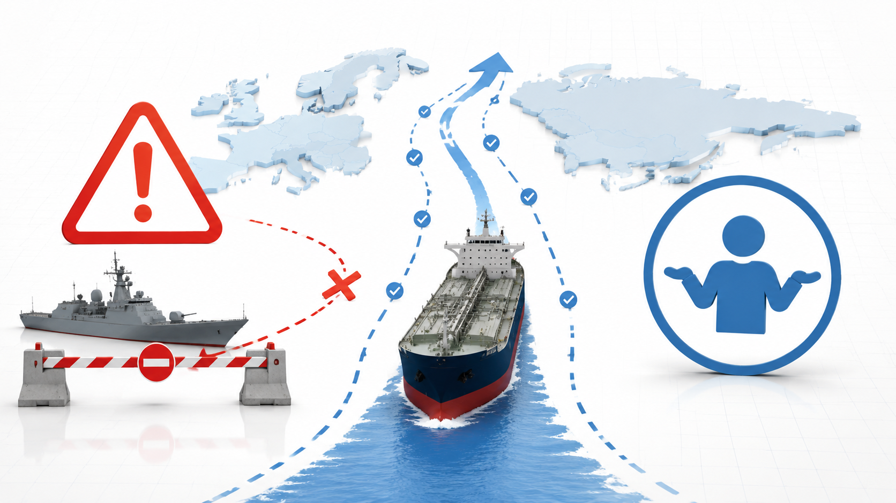
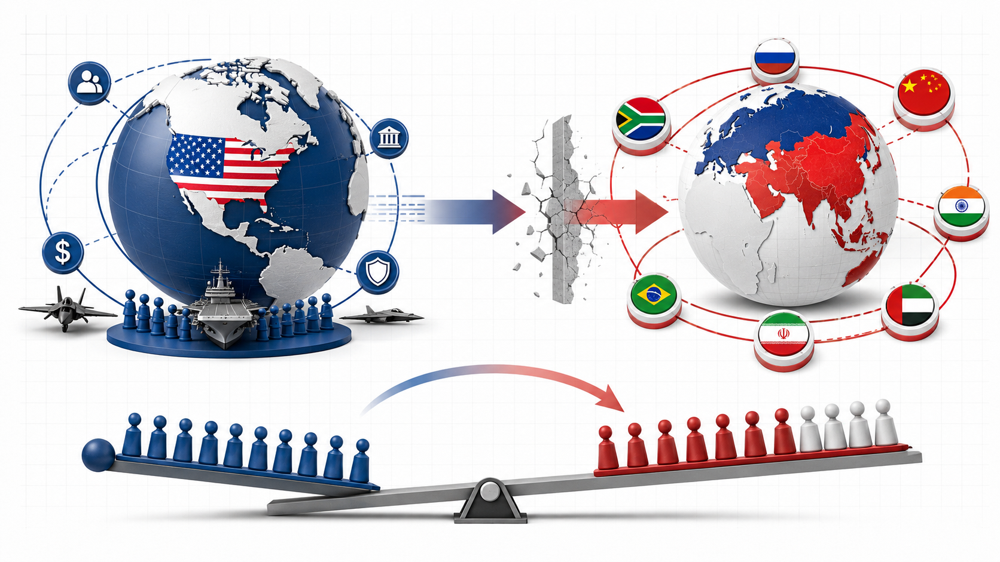

проблема
МОДЕЛЬ НЕ РАБОТАЕТ
Цифры показывают, что бизнес-модель убыточна и не масштабируется.

🐉
🦅
вызов гегемонии
ответ действием
угроза
игнор
проход
режиссер: ключевой хук
действие
СОЗДАЙТЕ БУДУЩЕЕ
Сосредоточьтесь на одном вопросе: создании вашего будущего.

🚧
🛢️
blockade line
барьерзакрыть
объектпролив
действие
ИЩИТЕ НОВЫЕ ПУТИ
Найдите новый сегмент аудитории или разработайте новый подпродукт.

⛔
🚢
ultimatum
входзапрет
выходзапрет
вывод
СОХРАНИТЕ ЭКСПЕРТИЗУ
Обязательно сохраняйте свою ключевую экспертизу при изменениях.

🇨🇳
🚢
route stays open
угроза
82%
подчинение
18%
решение
НЕ ИДИТЕ ЗАВТРА НА РАБОТУ.
Авторский перевод дипломатического смысла
Просто поверьте сам лично через это проходил

📄
ультиматум
🚢
проверка
слова проверяются маршрутом
решение
ЗАНИМАТЬСЯ ТОЛЬКО ВОПРОСОМ СОЗДАНИЕМ ВАШЕГО
ФОКУС НА ГЛАВНОМ

⛔
✅
sanctioned tanker
танкеридёт
барьерпробит
решение
ГЛАВНЫЙ РИСК
не идите завтра на работу. Просто поверьте, я сам лично через это проходил.

⚠️
🤷
угроза без действия
угрозаактивна
действиеноль
решение
ЧТО МЕНЯЕТСЯ
заниматься только вопросом созданием вашего будущего

🇺🇸
🌍
🌏
multipolar pressure
однополярность
↓
многополярность
↑